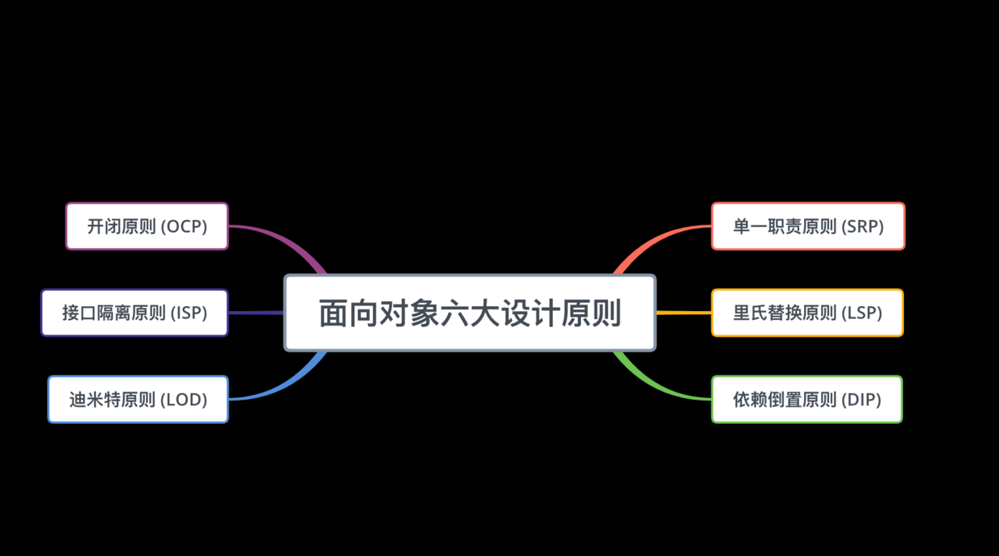

原则一、单一职责原则（Single Responsibility Principle，简称SRP ） 定义：应该有且仅有一个原因引起类的变更。
一个类只负责一项职责，如果发生变更时，可以考虑将一个类拆分成两个类，或者在一个类中添加新的方法。
在真实的开发中，不仅仅是类、函数和接口也要遵循单一职责原则。即：一个函数负责一个功能。如果一个函数里面有不同的功能，则需要将不同的功能的函数分离出去。
优点：
类的复杂性降低，实现什么职责都有清晰明确的定义。
类的可读性提高，复杂性减低。
如果接口或者函数的单一职责做得好，一个接口或者函数的修改只对相应的类有影响，对其他接口或者函数无影响，这对系统的扩展性、维护性都有非常大的帮助。
例如，需求上指出用一个类描述食肉和食草动物：
1 2 3 4 5 6 7 //================== Animal.h ================== @interface Animal : NSObject - (void)eatWithAnimalName:(NSString *)animalName; @end
运行结果：
1 2 3 2018-10-27 17:55:25.775317+0800 DesignPatterns[54087:24701786] 狼 吃肉 2018-10-27 17:55:25.775689+0800 DesignPatterns[54087:24701786] 豹 吃肉 2018-10-27 17:55:25.775721+0800 DesignPatterns[54087:24701786] 虎 吃肉
上线后，发现问题了，并不是所有的动物都是吃肉的，比如羊就是吃草的。修改时如果遵循单一职责原则，需要将 Animal 类细分为食草动物类 Herbivore，食肉动物 Carnivore，代码如下：
1 2 3 4 5 6 7 8 9 10 11 12 13 14 15 16 17 18 19 20 21 22 23 24 25 26 27 28 29 30 31 32 33 34 //================== Herbivore.h ================== @interface Herbivore : Animal @end @implementation Herbivore - (void)eatWithAnimalName:(NSString *)animalName { NSLog(@"%@ 吃草", animalName); } @end //================== Carnivore.h ================== @interface Carnivore : Animal @end @implementation Carnivore - (void)eatWithAnimalName:(NSString *)animalName { NSLog(@"%@ 吃肉", animalName); } @end //================== main 函数 ================== Animal *carnivore = [Carnivore new]; [carnivore eatWithAnimalName:@"狼"]; [carnivore eatWithAnimalName:@"豹"]; [carnivore eatWithAnimalName:@"虎"]; NSLog(@"\n"); Animal *herbivore = [Herbivore new]; [herbivore eatWithAnimalName:@"羊"];
在子类里面重写父类的 eatWithAnimalName 函数，运行结果：
1 2 3 4 5 2018-10-27 18:04:49.189722+0800 DesignPatterns[54422:24725132] 狼 吃肉 2018-10-27 18:04:49.190450+0800 DesignPatterns[54422:24725132] 豹 吃肉 2018-10-27 18:04:49.190482+0800 DesignPatterns[54422:24725132] 虎 吃肉 2018-10-27 18:04:49.190498+0800 DesignPatterns[54422:24725132] 2018-10-27 18:04:49.190530+0800 DesignPatterns[54422:24725132] 羊 吃草
这样一来，不仅仅在此次新需求中满足了单一职责原则，以后如果还要增加食肉动物和食草动物的其他功能，就可以直接在这两个类里面添加即可。但是，有一点，修改花销是很大的，除了将原来的类分解之外，还需要修改 main 函数 。而直接修改类 Animal 来达成目的虽然违背了单一职责原则，但花销却小的多，代码如下：
1 2 3 4 5 6 7 8 9 10 11 12 13 14 15 16 17 18 19 20 21 22 23 24 25 26 27 //================== Animal.h ================== @interface Animal : NSObject - (void)eatWithAnimalName:(NSString *)animalName; @end @implementation Animal - (void)eatWithAnimalName:(NSString *)animalName { if ([@"羊" isEqualToString:animalName]) { NSLog(@"%@ 吃草", animalName); } else { NSLog(@"%@ 吃肉", animalName); } } @end //================== main 函数 ================== Animal *animal = [Animal new]; [animal eatWithAnimalName:@"狼"]; [animal eatWithAnimalName:@"豹"]; [animal eatWithAnimalName:@"虎"]; [animal eatWithAnimalName:@"羊"];
运行结果：
1 2 3 4 2018-10-27 18:16:10.910397+0800 DesignPatterns[54677:24751636] 狼 吃肉 2018-10-27 18:16:10.911105+0800 DesignPatterns[54677:24751636] 豹 吃肉 2018-10-27 18:16:10.911138+0800 DesignPatterns[54677:24751636] 虎 吃肉 2018-10-27 18:16:10.911160+0800 DesignPatterns[54677:24751636] 羊 吃草
可以看到，这种修改方式要简单的多。有一天需求上增加牛和马也需要吃草，则又需要修改 Animal 类的 eatWithAnimalName 函数，而对原有代码的修改会对调用狼、豹和虎吃肉等功能带来风险，也许某一天你会发现运行结果变为虎也吃草了。 这种修改方式直接在代码级别上违背了单一职责原则，虽然修改起来最简单，但隐患却是最大的。还有一种修改方式：
1 2 3 4 5 6 7 8 9 10 11 12 13 14 15 16 17 18 19 20 21 22 23 24 25 26 27 28 29 30 31 32 33 34 35 //================== Animal.h ================== @interface Animal : NSObject /** * 吃草 */ - (void)eatGrassWithAnimalName:(NSString *)animalName; /** * 吃肉 */ - (void)eatMeatWithAnimalName:(NSString *)animalName; @end @implementation Animal - (void)eatGrassWithAnimalName:(NSString *)animalName { NSLog(@"%@ 吃草", animalName); } - (void)eatMeatWithAnimalName:(NSString *)animalName { NSLog(@"%@ 吃肉", animalName); } @end //================== main 函数 ================== Animal *animal = [Animal new]; [animal eatMeatWithAnimalName:@"狼"]; [animal eatMeatWithAnimalName:@"豹"]; [animal eatMeatWithAnimalName:@"虎"]; [animal eatGrassWithAnimalName:@"羊"];
运行结果：
1 2 3 4 2018-10-27 18:31:30.321473+0800 DesignPatterns[55048:24787008] 狼 吃肉 2018-10-27 18:31:30.321884+0800 DesignPatterns[55048:24787008] 豹 吃肉 2018-10-27 18:31:30.321922+0800 DesignPatterns[55048:24787008] 虎 吃肉 2018-10-27 18:31:30.321939+0800 DesignPatterns[55048:24787008] 羊 吃草
通过运行结果可以看到，这种修改方式没有改动原来的函数，而是在类中新加了一个函数，这样虽然也违背了类单一职责原则 ，但在函数级别上却是符合单一职责原则的，因为它并没有动原来函数的代码。
在实际的开发应用中，有很多复杂的场景，怎么设计一个类或者一个函数，让应用程序更加灵活，是更多程序员们值得思考的，需要结合特定的需求场景，有可能有些类里面有很多的功能，但是切记不要将不属于这个类本身的功能也强加进来，这样不仅带来不必要的维护成本，也违反了单一职责的设计原则 。
原则二、里氏替换原则（Liskov Substitution Principle，简称LSP） 定义：如果对一个类型为 T1 的对象 o1，都有类型为 T2 的对象 o2，使得以 T1 定义的所有程序 P 在所有的对象 o1 都替换成 o2 时，程序 P 的行为没有发生变化，那么类型 T2 是类型 T1 的子类型。有点拗口，通俗点讲，只要父类能出现的地方子类就可以出现，而且替换为子类也不会产生任何错误或异常，使用者不需要知道是父类还是子类。但是，反过来就不行了，有子类出现的地方，父类未必就能适应 。
面向对象的语言的三大特点是继承、封装、多态，里氏替换原则就是依赖于继承、多态这两大特性。当使用继承时，遵循里氏替换原则。但是使用继承会给程序带来侵入性，程序的可移植性降低，增加了对象间的耦合性，如果一个类被其他的类所继承，则当这个类需要修改时，必须考虑到所有的子类，并且父类修改后，所有涉及到子类的功能都有可能会产生影响。子类可以扩展父类的功能，但不能改变父类原有的功能。
注意：
子类可以实现父类的抽象方法，但不能覆盖父类的非抽象方法。
子类中可以增加自己特有的方法。
当子类的方法重载父类的方法时，方法的前置条件（即方法的形参）要比父类方法的输入参数更宽松。
当子类的方法实现父类的抽象方法时，方法的后置条件（即方法的返回值）要比父类更严格。
比如，需要完成一个两数相加的功能：
1 2 3 4 5 6 7 8 9 10 11 12 13 14 15 16 17 18 19 20 //================== A.h ================== @interface A : NSObject /** 加法 @param a @param b @return 相加之后的和 */ - (NSInteger)addition:(NSInteger)a b:(NSInteger)b; @end //================== main 函数 ================== A *a = [[A alloc] init]; NSLog(@"100+50=%ld", [a addition:100 b:50]); NSLog(@"100+80=%ld", [a addition:100 b:80]);
运行结果如下，
1 2 2018-11-01 22:53:23.549358+0800 DesignPatterns[18063:363232] 100+50=150 2018-11-01 22:53:23.549586+0800 DesignPatterns[18063:363232] 100+80=180
接着，需求上需要增加一个新的功能，完成两数相加，然后再与 100 求差，由类 B 来负责。即类 B 需要完成两个功能：
由于类 A 已经实现了加法功能，所以 B 继承 A 之后，只需要完成减法功能就可以了，但是在类 B 中不小心重写了父类 A 的减法功能，如下：
1 2 3 4 5 6 7 8 9 10 11 12 13 14 15 16 17 18 19 20 21 22 23 24 25 26 27 28 29 30 31 32 //================== B.h ================== @interface B : A /** 加法 @param a @param b @return 相加之后的和 */ - (NSInteger)addition:(NSInteger)a b:(NSInteger)b; /** 减法 @param a @param b @return 相加之后的和 */ - (NSInteger)subtraction:(NSInteger)a b:(NSInteger)b; @end //================== main 函数 ================== B *b = [[B alloc] init]; NSInteger sub = [b addition:100 b:50]; NSInteger difference = [b subtraction:sub b:100]; NSLog(@"100+50=%ld", sub); NSLog(@"100+100+50=%ld", difference);
运行结果如下，
1 2 2018-11-01 23:15:06.530080+0800 DesignPatterns[18363:375940] 100+50=5000 2018-11-01 23:15:06.530758+0800 DesignPatterns[18363:375940] 100+100+50=4900
发现原本运行正常的相减功能发生了错误，原因就是类 B 在给方法起名时无意中重写了父类的方法，造成所有运行相减功能的代码全部调用了类 B 重写后的方法，造成原本运行正常的功能出现了错误。如果按照“里氏替换原则”，只要父类能出现的地方子类就可以出现，而且替换为子类也不会产生任何错误或异常，使用者不需要知道是父类还是子类 ，是不成立的。
在平时的日常开发中，通常会通过重写父类的方法来完成新的功能，这样写起来虽然简单，但是整个继承体系的可复用性会比较差，特别是运用多态比较频繁时，程序运行出错的几率非常大。
原则三、依赖倒置原则（Dependence Inversion Principle，简称DIP） 依赖倒置原则的核心思想是面向接口编程。
定义：模块间的依赖通过抽象发生，高层模块和低层模块之间不应该发生直接的依赖关系，二者都应该是通过接口或抽象类产生的；即依赖抽象，而不依赖具体的实现。
例如：类 A 直接依赖类 B，假如要将类 A 改为依赖类 C，则必须通过修改类 A 的代码来达成。比如在这种场景下，业务逻辑层类 A 相对于数据层类 B 是高层模块，因为业务逻辑层需要调用数据层去连接数据库，如果业务逻辑层类 A 依赖数据层类 B 的话，那么将来需求变更，需要把旧的数据层类 B 修改为新的数据层类 C，就必须通过修改类 A，这样就会给应用程序带来不必要的风险。
解决方案：将类 A 修改为依赖接口 I，类 B 和类 C 各自实现接口 I，类 A 通过接口 I 间接与类 B 或者类 C 发生联系，则会大大降低修改类 A 的几率。要做到可扩展高复用，尽量不要让业务逻辑层依赖数据层，可以在数据层抽象出一个接口，让业务逻辑层依赖于这个抽象接口。
比如：母亲给孩子讲故事，只要给她一本书，她就可以照着书给孩子讲故事了。
1 2 3 4 5 6 7 8 9 10 11 12 13 14 15 16 17 18 19 20 21 22 23 24 25 26 27 28 //================== Book.h ================== @interface Book : NSObject /** 故事内容 */ - (void)theStoryContent; @end //================== Mother.h ================== @class Book; @interface Mother : NSObject /** 讲故事 */ - (void)tellStory:(Book *)book; @end //================== main 函数 ================== Mother *mother = [Mother new]; Book *book = [Book new]; [mother tellStory:book];
运行结果如下，
1 2 2018-11-09 14:52:08.759154+0800 DesignPatterns[6135:458778] 妈妈开始讲故事 2018-11-09 14:52:08.759365+0800 DesignPatterns[6135:458778] 很久很久以前有一个阿拉伯的故事……
将来有一天，需求变更成，增加让母亲讲一下报纸上的故事的功能，如下：
1 2 3 4 5 6 7 8 9 10 //================== Newspaper.h ================== @interface Newspaper : NSObject /** 报纸内容 */ - (void)theStoryContent; @end
如果将 Newspaper 类替换 Book 类，发现母亲看不懂报纸上的故事，必须要修改 Mother 类里面的 tellStory 方法才能看不懂报纸上的故事。假如以后需求换成杂志呢？换成网页呢？还要不断地修改Mother 类，这显然不是好的设计，高层模块都依赖了低层模块的改动，因此上述设计不符合依赖倒置原则。Mother 类与 Book 类之间的耦合性太高了，必须降低他们之间的耦合度才行。
解决方案，将母亲讲故事的方法抽象一个接口或者 Protocol，让Mother 类不再依赖 Newspaper 和 Book 类具体实现，而是依赖抽象出来的接口或者 Protocol。并且 Newspaper 和 Book 类也都依赖这个抽象出来的接口或者 Protocol，通过实现接口或者 Protocol 来做自己的事情。
1 2 3 4 5 6 7 8 9 10 //================== IReaderProtocol.h ================== @protocol IReaderProtocol <NSObject> /** 故事内容 */ - (void)theStoryContent; @end
Mother 类与接口 IReader 发生依赖关系，而 Book 和 Newspaper 都属于读物的范畴，他们各自都去实现 IReader 接口，这样就符合依赖倒置原则了，代码修改为：
1 2 3 4 5 6 7 8 9 10 11 12 13 14 15 16 17 18 19 20 21 22 23 24 25 26 27 28 29 30 31 32 33 34 35 36 37 38 39 40 41 42 43 44 45 46 47 48 49 50 51 52 //================== Book.h ================== @interface Book : NSObject <IReaderProtocol> @end //================== Newspaper.h ================== @interface Newspaper : NSObject <IReaderProtocol> @end //================== IReaderProtocol.h ================== @protocol IReaderProtocol <NSObject> /** 故事内容 */ - (void)theStoryContent; @end //================== Mother.h ================== @interface Mother : NSObject /** 讲故事 */ - (void)tellStory:(NSObject<IReaderProtocol> *)reading; @end @implementation Mother - (void)tellStory:(NSObject<IReaderProtocol> *)reading { NSLog(@"妈妈开始讲故事"); if ([reading respondsToSelector:@selector(theStoryContent)]) { [reading theStoryContent]; } } @end //================== main 函数 ================== Mother *mother = [Mother new]; Book *book = [Book new]; Newspaper *newspaper = [Newspaper new]; [mother tellStory:book]; [mother tellStory:newspaper];
运行结果如下，
1 2 3 4 2018-11-09 15:28:01.182603+0800 DesignPatterns[7055:532924] 妈妈开始讲故事 2018-11-09 15:28:01.182879+0800 DesignPatterns[7055:532924] 很久很久以前有一个阿拉伯的故事…… 2018-11-09 15:28:01.182916+0800 DesignPatterns[7055:532924] 妈妈开始讲故事 2018-11-09 15:28:01.182955+0800 DesignPatterns[7055:532924] 雄鹿终结勇士八连胜……
这样修改后，无论以后怎样扩展 main 函数，都不需要再修改 Mother 类了。这里只是举了一个比较简单的例子，在实际的项目开发中，尽可能的采用“低耦合，高内聚”的原则，采用依赖倒置原则给多人并行开发带来了极大的便利 ，无论是面向过程编程还是面向对象编程，只有使各个模块之间的耦合尽量的低，才能提高代码的复用率。所以遵循依赖倒置原则可以降低类之间的耦合性，提高系统的稳定性，降低修改程序造成的风险。
原则四、接口隔离原则（Interface Segregation Principle,简称ISP） 定义：客户端不应该依赖它不需要的接口；一个类对另一个类的依赖应该建立在最小的接口上。
1 2 Class 'ClassB' does not conform to protocol 'InterfaceH' Class 'ClassD' does not conform to protocol 'InterfaceH'
注意：在 Objective-C 中的协议可以通过 @optional 关键字声明不需要必须实现的方法，这个只是 Objective-C 的一个特性，可以消除在 ClassB 和 ClassD 中没有实现 InterfaceH 的 protocol 协议。
比如，类 A 依赖接口 H 中的方法1、方法2、方法5，类 B 是对类 A 依赖的实现。类 C 依赖接口 H 中的方法3、方法4、方法5，类 D 是对类 C 依赖的实现。对于类 B 和类 D 来说，虽然他们都存在着用不到的方法，但由于实现了接口 H，因为接口 H 对于类 A 和类 C 来说不是最小接口，所以也必须要实现这些用不到的方法。
1 2 3 4 5 6 7 8 9 10 11 12 13 14 15 16 17 18 19 20 21 22 23 24 25 26 27 28 29 30 31 32 33 34 35 36 37 38 39 40 41 42 43 44 45 46 47 48 49 50 51 52 53 54 55 56 57 58 59 60 61 62 63 64 65 66 67 68 69 70 71 72 73 74 75 76 77 78 79 80 81 82 83 84 85 86 87 88 89 90 91 92 93 94 95 96 97 98 99 100 101 102 103 104 105 106 107 108 109 110 111 112 113 114 115 116 117 118 119 120 121 //================== InterfaceH.h ================== @protocol InterfaceH <NSObject> - (void)method1; - (void)method2; - (void)method3; - (void)method4; - (void)method5; @end //================== ClassB.h ================== @interface ClassB : NSObject <InterfaceH> @end @implementation ClassB - (void)method1 { NSLog(@"类 B 实现接口 H 的方法1"); } - (void)method2 { NSLog(@"类 B 实现接口 H 的方法2"); } - (void)method3 { //not necessarily } - (void)method4 { //not necessarily } - (void)method5 { NSLog(@"类 B 实现接口 H 的方法5"); } @end //================== ClassA.h ================== @interface ClassA : NSObject - (void)depend:(NSObject<InterfaceH> *)classB; @end @implementation ClassA - (void)depend:(NSObject<InterfaceH> *)classB { if ([classB respondsToSelector:@selector(method1)]) { [classB method1]; } if ([classB respondsToSelector:@selector(method2)]) { [classB method2]; } if ([classB respondsToSelector:@selector(method5)]) { [classB method5]; } } @end //================== ClassD.h ================== @interface ClassD : NSObject <InterfaceH> @end @implementation ClassD - (void)method1 { //not necessarily } - (void)method2 { //not necessarily } - (void)method3 { NSLog(@"类 D 实现接口 H 的方法3"); } - (void)method4 { NSLog(@"类 D 实现接口 H 的方法4"); } - (void)method5 { NSLog(@"类 D 实现接口 H 的方法5"); } @end //================== ClassC.h ================== @interface ClassC : NSObject - (void)depend:(NSObject<InterfaceH> *)classD; @end @implementation ClassC - (void)depend:(NSObject<InterfaceH> *)classD { if ([classD respondsToSelector:@selector(method3)]) { [classD method3]; } if ([classD respondsToSelector:@selector(method4)]) { [classD method4]; } if ([classD respondsToSelector:@selector(method5)]) { [classD method5]; } } @end
可以看到，如果接口过于臃肿，只要接口中出现的方法，不管对依赖于它的类有没有用处，实现类中都必须去实现这些方法，这显然不是好的设计。由于接口方法的设计造成了冗余，因此该设计不符合接口隔离原则。
解决方法：将臃肿的接口 H 拆分为独立的几个接口，类 A 和类 C 分别与他们需要的接口建立依赖关系，也就是采用接口隔离原则。
1 2 3 4 5 6 7 8 9 10 11 12 13 14 15 16 17 18 19 20 21 22 23 24 25 26 27 28 29 30 31 32 33 34 35 36 37 38 39 40 41 42 43 44 45 46 47 48 49 50 51 52 53 54 55 56 57 58 59 60 61 62 63 64 65 66 67 68 69 70 71 72 73 74 75 76 77 78 79 80 81 82 83 84 85 86 87 88 89 90 91 92 93 94 95 96 97 98 99 100 101 102 103 104 105 106 107 108 109 110 111 112 113 114 115 //================== InterfaceH.h ================== @protocol InterfaceH <NSObject> - (void)method5; @end @protocol InterfaceH1 <InterfaceH> - (void)method1; - (void)method2; @end @protocol InterfaceH2 <InterfaceH> - (void)method3; - (void)method4; @end //================== ClassB.h ================== @interface ClassB : NSObject <InterfaceH1> @end @implementation ClassB - (void)method1 { NSLog(@"类 B 实现接口 H 的方法1"); } - (void)method2 { NSLog(@"类 B 实现接口 H 的方法2"); } - (void)method5 { NSLog(@"类 B 实现接口 H 的方法5"); } @end //================== ClassA.h ================== @interface ClassA : NSObject - (void)depend:(NSObject<InterfaceH1> *)classB; @end @implementation ClassA - (void)depend:(NSObject<InterfaceH1> *)classB { if ([classB respondsToSelector:@selector(method1)]) { [classB method1]; } if ([classB respondsToSelector:@selector(method2)]) { [classB method2]; } if ([classB respondsToSelector:@selector(method5)]) { [classB method5]; } } @end //================== ClassD.h ================== @interface ClassD : NSObject <InterfaceH2> @end @implementation ClassD - (void)method3 { NSLog(@"类 D 实现接口 H 的方法3"); } - (void)method4 { NSLog(@"类 D 实现接口 H 的方法4"); } - (void)method5 { NSLog(@"类 D 实现接口 H 的方法5"); } @end //================== ClassC.h ================== @interface ClassC : NSObject - (void)depend:(NSObject<InterfaceH2> *)classD; @end @implementation ClassC - (void)depend:(NSObject<InterfaceH2> *)classD { if ([classD respondsToSelector:@selector(method3)]) { [classD method3]; } if ([classD respondsToSelector:@selector(method4)]) { [classD method4]; } if ([classD respondsToSelector:@selector(method5)]) { [classD method5]; } } @end
接口隔离原则的含义是：建立单一接口，不要建立庞大臃肿的接口，尽量细化接口，接口中的方法尽量少。在实际项目开发中，只暴露给调用的类需要的方法，不需要的方法则隐藏起来。只有专注地为一个模块提供定制服务，才能建立最小的依赖关系，不要试图去建立一个很庞大的接口供所有依赖它的类去调用。通过分散定义多个接口，可以预防外来变更的扩散，提高系统的灵活性和可维护性。
原则五、迪米特法则（Law of Demeter，简称LOD） 定义：一个对象应该对其他对象保持最少的了解。
当类与类之间的关系越密切，耦合度越大，当一个类发生改变时，对另一个类的影响也越大。通俗的来讲，就是一个类对自己依赖的类知道的越少越好。也就是说，对于被依赖的类来说，无论逻辑多么复杂，都尽量地的将逻辑封装在类的内部，对外只暴露必要的接口。
解决方案：尽量降低类与类之间的耦合。
比如，有一个集团公司，下属单位有分公司和直属部门，现在要求打印出所有下属单位的员工 ID：
1 2 3 4 5 6 7 8 9 10 11 12 13 14 15 16 17 18 19 20 21 //================== EmployeeModel.h ================== @interface EmployeeModel : NSObject /** 总公司员工ID */ @property (nonatomic, copy) NSString *employee_id; @end //================== SubEmployeeModel.h ================== @interface SubEmployeeModel : NSObject /** 分公司员工ID */ @property (nonatomic, copy) NSString *subemployee_id; @end
Company 类，
1 2 3 4 5 6 7 8 9 10 11 12 13 14 15 16 17 18 19 20 21 22 23 24 25 26 27 28 29 30 31 32 33 34 35 36 37 38 39 40 41 42 43 44 45 46 47 48 49 50 51 52 53 54 55 56 57 58 59 //================== Company.h ================== @interface Company : NSObject - (NSArray *)getAllEmployee; - (void)printAllEmployeeWithSubCompany:(SubCompany *)subCompany; @end @implementation Company - (NSArray *)getAllEmployee { NSMutableArray<EmployeeModel *> *employeeArray = [NSMutableArray<EmployeeModel *> array]; for (int i = 0; i < 3; i++) { EmployeeModel *employeeModel = [[EmployeeModel alloc] init]; [employeeModel setEmployee_id:[@(i) stringValue]]; [employeeArray addObject:employeeModel]; } return employeeArray.copy; } - (void)printAllEmployeeWithSubCompany:(SubCompany *)subCompany { // 分公司员工 NSArray<SubEmployeeModel *> *subEmployeeArray = subCompany.getAllEmployee; for (SubEmployeeModel *employeeModel in subEmployeeArray) { NSLog(@"分公司员工ID:%@", employeeModel.subemployee_id); } // 总公司员工 NSArray<EmployeeModel *> *employeeArray = self.getAllEmployee; for (EmployeeModel *employeeModel in employeeArray) { NSLog(@"总公司员工ID:%@", employeeModel.employee_id); } } @end //================== SubCompany.h ================== @interface SubCompany : NSObject - (NSArray *)getAllEmployee; @end @implementation SubCompany - (NSArray *)getAllEmployee { NSMutableArray<SubEmployeeModel *> *employeeArray = [NSMutableArray<SubEmployeeModel *> array]; for (int i = 0; i < 3; i++) { SubEmployeeModel *employeeModel = [[SubEmployeeModel alloc] init]; [employeeModel setSubemployee_id:[@(i) stringValue]]; [employeeArray addObject:employeeModel]; } return employeeArray.copy; } @end
从上面可以看出，打印 Company 所有员工的 ID，需要依赖分公司 SubCompany。但是在 printAllEmployeeWithSubCompany: 方法里面必须要初始化分公司员工 SubEmployeeModel。而SubEmployeeModel 和 Company 并不是直接联系，换句话说，总公司 Company 只需要依赖分公司 SubCompany，与分公司的员工 SubEmployeeModel 并没有任何联系，这样设计显然是增加了不必要的耦合。
按照迪米特法则，类与类之间的应该减少不必要的关联程度。
1 2 3 4 5 6 7 8 9 10 11 12 13 14 15 16 17 18 19 20 21 22 23 24 25 26 27 28 29 30 31 32 33 34 35 36 37 38 39 40 41 42 43 44 45 46 47 48 49 50 51 52 53 54 55 56 57 58 59 60 61 62 63 64 65 66 67 68 69 70 71 72 73 74 75 76 77 78 //================== Company.h ================== @interface Company : NSObject /** 获取所有分公司员工 */ - (NSArray *)getAllEmployee; /** 打印公司所有员工 */ - (void)printAllEmployeeWithSubCompany:(SubCompany *)subCompany; @end @implementation Company - (NSArray *)getAllEmployee { NSMutableArray<EmployeeModel *> *employeeArray = [NSMutableArray<EmployeeModel *> array]; for (int i = 0; i < 3; i++) { EmployeeModel *employeeModel = [[EmployeeModel alloc] init]; [employeeModel setEmployee_id:[@(i) stringValue]]; [employeeArray addObject:employeeModel]; } return employeeArray.copy; } - (void)printAllEmployeeWithSubCompany:(SubCompany *)subCompany { // 分公司员工 [subCompany printAllEmployee]; // 总公司员工 NSArray<EmployeeModel *> *employeeArray = self.getAllEmployee; for (EmployeeModel *employeeModel in employeeArray) { NSLog(@"总公司员工ID:%@", employeeModel.employee_id); } } @end //================== SubCompany.h ================== @interface SubCompany : NSObject /** 获取所有分公司员工 */ - (NSArray *)getAllEmployee; /** 打印分公司所有员工 */ - (void)printAllEmployee; @end @implementation SubCompany - (NSArray *)getAllEmployee { NSMutableArray<SubEmployeeModel *> *employeeArray = [NSMutableArray<SubEmployeeModel *> array]; for (int i = 0; i < 3; i++) { SubEmployeeModel *employeeModel = [[SubEmployeeModel alloc] init]; [employeeModel setSubemployee_id:[@(i) stringValue]]; [employeeArray addObject:employeeModel]; } return employeeArray.copy; } - (void)printAllEmployee { // 分公司员工 NSArray<SubEmployeeModel *> *subEmployeeArray = self.getAllEmployee; for (SubEmployeeModel *employeeModel in subEmployeeArray) { NSLog(@"分公司员工ID:%@", employeeModel.subemployee_id); } } @end
修改后，为分公司增加了打印所有公钥 ID 的方法，总公司直接调分公司的打印方法，从而避免了与分公司的员工发生耦合。
耦合的方式很多，依赖、关联、组合、聚合等。
迪米特法则的初衷是降低类之间的耦合，由于每个类都减少了不必要的依赖，因此的确可以降低耦合关系。但是过分的使用迪米特原则，会产生大量传递类，导致系统复杂度变大。所以在采用迪米特法则时要反复权衡，既做到结构清晰，又要高内聚低耦合。
原则六、开闭原则（Open Close Principle，简称OCP） 定义：一个软件实体如类、模块和函数应该对扩展开放，对修改关闭。
核心思想：尽量通过扩展应用程序中的类、模块和函数来解决不同的需求场景，而不是通过直接修改已有的类、模块和函数。
用抽象构建框架，用实现扩展细节 ，对扩展开放的关键是抽象，而对象的多态则保证了这种扩展的开放性。开放原则首先意味着我们可以自由地增加功能，而不会影响原有功能。这就要求我们能够通过继承完成功能的扩展。其次，开放原则还意味着实现是可替换的。只有利用抽象，才可以为定义提供不同的实现，然后根据不同的需求实例化不同的实现子类。
开放封闭原则的优点：
代码可读性高，可维护性强。
帮助缩小逻辑粒度，以提高可复用性。
可以使维护人员只扩展一个类，而非修改一个类，从而提高可维护性。
在设计之初考虑所有可能变化的因素，留下接口，从而符合面向对象开发的要求。
比如，书店售书的经典例子：
1 2 3 4 5 6 7 8 9 10 11 12 13 14 15 16 17 18 19 20 21 22 23 24 25 26 27 28 29 30 31 32 33 34 35 36 37 38 39 40 41 42 43 44 45 46 //================== IBookProtocol.h ================== @protocol IBookProtocol <NSObject> /** 获取书籍名称 */ - (NSString *)bookName; /** 获取书籍售价 */ - (CGFloat)bookPrice; /** 获取书籍作者 */ - (NSString *)bookAuthor; @end //================== NovelBook.h ================== @interface NovelBook : NSObject <IBookProtocol> - (instancetype)initWithBookName:(NSString *)name price:(CGFloat)price author:(NSString *)author; @end //================== BookStore.h ================== @interface BookStore : NSObject - (NSArray<IBookProtocol> *)bookArray; @end //================== main 函数 ================== // 模拟书店卖书 BookStore *bookStore = [BookStore new]; for (NovelBook *novelBook in bookStore.bookArray) { NSLog(@"书籍名称：%@ 书籍作者：%@ 书籍价格：%2f", [novelBook bookName], [novelBook bookAuthor], [novelBook bookPrice]); }
运行结果如下，
1 2 3 4 2018-11-12 15:11:32.642070+0800 DesignPatterns[1863:5763476] 书籍名称：天龙八部 书籍作者：金庸 书籍价格：50.000000 2018-11-12 15:11:32.642495+0800 DesignPatterns[1863:5763476] 书籍名称：巴黎圣母院 书籍作者：雨果 书籍价格：70.000000 2018-11-12 15:11:32.642530+0800 DesignPatterns[1863:5763476] 书籍名称：悲惨世界 书籍作者：雨果 书籍价格：80.000000 2018-11-12 15:11:32.642558+0800 DesignPatterns[1863:5763476] 书籍名称：金瓶梅 书籍作者：兰陵王 书籍价格：40.000000
将来某一天需求变更为项目投产，书店盈利，书店决定，40 元以上打 8 折，40 元以下打 9 折。
在实际的项目开发中，如果不懂得开闭原则的话，很容易犯下面的错误：
在 IBookProtocol 上新增加一个方法 bookOffPrice() 方法，专门进行打折，所有实现类实现这个方法，但是如果其他不想打折的书籍也会因为实现了书籍的接口必须打折。
修改 NovelBook 实现类中的 bookPrice() 方中实现打折处理，由于该方法已经实现了打折处理价格，因此采购书籍人员看到的也是打折后的价格的情况。
很显然按照上面两种方案的话，随着需求的增加，需要反复修改之前创建的类，给新增的类造成了不必要的冗余，业务逻辑的处理和需求不相符合等情况。
1 2 3 4 5 6 7 8 9 10 11 12 13 14 15 16 17 18 19 20 21 22 23 24 25 26 27 28 29 30 31 32 33 34 35 36 37 38 39 40 41 42 43 44 45 46 47 48 49 50 51 52 53 54 55 56 57 58 59 60 61 62 63 64 65 66 67 68 69 70 71 72 73 74 75 76 77 78 79 80 81 82 83 84 85 86 87 88 //================== OffNovelBook.h ================== @interface OffNovelBook : NovelBook @end @implementation OffNovelBook - (instancetype)initWithBookName:(NSString *)name price:(CGFloat)price author:(NSString *)author { return [super initWithBookName:name price:price author:author]; } - (CGFloat)bookPrice { CGFloat originalPrice = [super bookPrice]; CGFloat offPrice = 0; if (originalPrice > 40) { offPrice = originalPrice * 0.8; } else { offPrice = originalPrice * 0.9; } return offPrice; } @end //================== BookStore.h ================== @interface BookStore : NSObject - (NSArray<IBookProtocol> *)bookArray; - (NSArray<IBookProtocol> *)offBookArray; @end @implementation BookStore - (NSArray<IBookProtocol> *)bookArray { NSMutableArray<IBookProtocol> *tempArray = [NSMutableArray<IBookProtocol> array]; NovelBook *book1 = [[NovelBook alloc] initWithBookName:@"天龙八部" price:30 author:@"金庸"]; [tempArray addObject:book1]; NovelBook *book2 = [[NovelBook alloc] initWithBookName:@"巴黎圣母院" price:70 author:@"雨果"]; [tempArray addObject:book2]; NovelBook *book3 = [[NovelBook alloc] initWithBookName:@"悲惨世界" price:80 author:@"雨果"]; [tempArray addObject:book3]; NovelBook *book4 = [[NovelBook alloc] initWithBookName:@"金瓶梅" price:40 author:@"兰陵王"]; [tempArray addObject:book4]; return tempArray; } - (NSArray<IBookProtocol> *)offBookArray { NSMutableArray<IBookProtocol> *tempArray = [NSMutableArray<IBookProtocol> array]; OffNovelBook *book1 = [[OffNovelBook alloc] initWithBookName:@"天龙八部" price:30 author:@"金庸"]; [tempArray addObject:book1]; OffNovelBook *book2 = [[OffNovelBook alloc] initWithBookName:@"巴黎圣母院" price:70 author:@"雨果"]; [tempArray addObject:book2]; OffNovelBook *book3 = [[OffNovelBook alloc] initWithBookName:@"悲惨世界" price:80 author:@"雨果"]; [tempArray addObject:book3]; OffNovelBook *book4 = [[OffNovelBook alloc] initWithBookName:@"金瓶梅" price:40 author:@"兰陵王"]; [tempArray addObject:book4]; return tempArray; } @end //================== main 函数 ================== BookStore *bookStore = [BookStore new]; NSLog(@"------------书店卖出去的原价书籍记录如下：------------"); for (NovelBook *novelBook in bookStore.bookArray) { NSLog(@"书籍名称：%@ 书籍作者：%@ 书籍价格：%2f", [novelBook bookName], [novelBook bookAuthor], [novelBook bookPrice]); } NSLog(@"------------书店卖出去的打折书籍记录如下：------------"); for (OffNovelBook *novelBook in bookStore.offBookArray) { NSLog(@"书籍名称：%@ 书籍作者：%@ 书籍价格：%2f", [novelBook bookName], [novelBook bookAuthor], [novelBook bookPrice]); }
运行结果如下，
1 2 3 4 5 6 7 8 9 10 2018-11-12 15:52:01.639550+0800 DesignPatterns[2962:6151804] ------------书店卖出去的原价书籍记录如下：------------ 2018-11-12 15:52:01.639895+0800 DesignPatterns[2962:6151804] 书籍名称：天龙八部 书籍作者：金庸 书籍价格：30.000000 2018-11-12 15:52:01.639927+0800 DesignPatterns[2962:6151804] 书籍名称：巴黎圣母院 书籍作者：雨果 书籍价格：70.000000 2018-11-12 15:52:01.639951+0800 DesignPatterns[2962:6151804] 书籍名称：悲惨世界 书籍作者：雨果 书籍价格：80.000000 2018-11-12 15:52:01.639971+0800 DesignPatterns[2962:6151804] 书籍名称：金瓶梅 书籍作者：兰陵王 书籍价格：40.000000 2018-11-12 15:52:01.639988+0800 DesignPatterns[2962:6151804] ------------书店卖出去的打折书籍记录如下：------------ 2018-11-12 15:52:01.640029+0800 DesignPatterns[2962:6151804] 书籍名称：天龙八部 书籍作者：金庸 书籍价格：27.000000 2018-11-12 15:52:01.640145+0800 DesignPatterns[2962:6151804] 书籍名称：巴黎圣母院 书籍作者：雨果 书籍价格：56.000000 2018-11-12 15:52:01.640194+0800 DesignPatterns[2962:6151804] 书籍名称：悲惨世界 书籍作者：雨果 书籍价格：64.000000 2018-11-12 15:52:01.640217+0800 DesignPatterns[2962:6151804] 书籍名称：金瓶梅 书籍作者：兰陵王 书籍价格：36.000000
在实际的项目开发中，